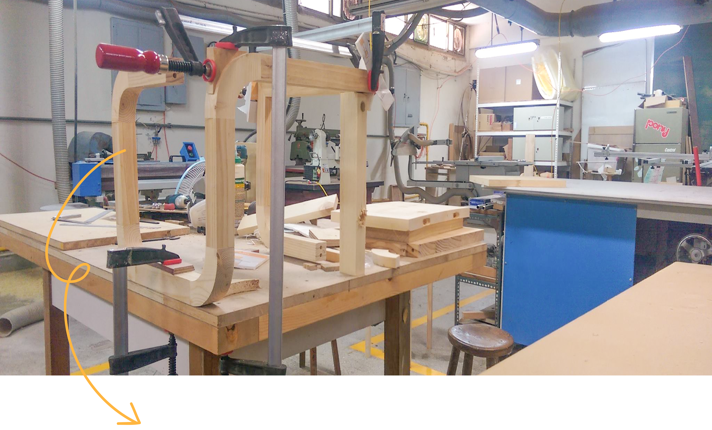

This is an self-conducted project I did over summer break. It is an attempt to explore woodshop facility, woodworking techniques, and the material itself. My first piece of furniture! I really enjoyed!!
 The curved outline made it really difficult to clamp the structure when assembling.
I needed the help of radiused jigs, ecternal support, and the desk surface in order to fix every piece.


It is now by the door at my home, our family uses it when we put on our shoes :D